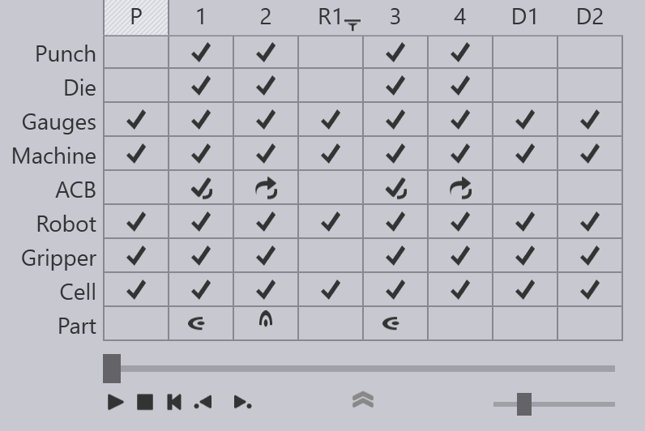

Bend Navigator

Bend Navigator øverst på skærmen giver et overblik over hele cyklussen. De fleste af de ikoner og den terminologi, der bruges i navigatoren, ligner dem, der bruges til i navigatoren til manuel bukning. Dog kan de ekstra kompleksiteter ved robotstyret bukning tilføje nogle ekstra rækker og søjler, som vi beskriver her.
Kolonner for opsamling, omgribning og aflejring
Billedet ovenfor viser bukningsnavigatoren, der vises for en BendMaster-del med fire bukninger. Bukningerne kan ses i kolonnerne mærket 1 til 4, og der er vist nogle ekstra kolonner.
-
Kolonnen markeret P repræsenterer handlingen delopsamling. Før bukningen kan starte, skal BendMaster samle et emne op (flad plade) fra en palle eller fra en deldispenser. Denne kolonne repræsenterer denne aktivitet. Der kan klikkes på den og skyderegulatoren kan bruges til at se en simulation af opsamlingsaktivitenen. Hvis der er nogen kollisioner eller andre problemer under denne opsamling, vil tilsvarende rækker i denne kolonne lyse gule (for advarsler) eller røde (for fejl).
-
Kolonnerne markeret med tags såsom R1, R2 repræsenterer omgribningsaktiviteter. Under opsamling vil griberen opsamle delen ved at gribe den langs et bestemt plan, i en bestemt retning. Nogle gange kan ikke alle bukninger i delen afvikles med samme retning, og griberen skal muligvis lave en omgribning af delen for at fortsætte. I dette eksempel ovenfor skulle griberen opsamle delen med en anden retning mellem bukningerne 2 og 3 ved brug af en omgribning. Kolonnen R1 kan bruges til at simulere denne omgribning eller til at overvåge denne aktivitet for kollisioner eller andre fejl.
-
Kolonnerne markeret med tags såsom D1, D2 repræsenterer delens aflejringer på den endelige palle, transportør eller kurv. Hver af aflejringskolonnerne repræsenterer en bestemt retning af delen på aflejringsstakken, og der kan være flere sådanne retninger afhængigt af aflejringens mønster, der bruges.
Robot-, griber- og cellerækker
Der er tilføjet nye rækker til komponenterne Robot, Griber og de andre Celler. Disse rækker bruges til at signalere kollisioner eller andre fejl. For eksempel signaleres en kollision mellem robotten og maskinbordet af et ikon for rød kollision i begge disse rækker. Under simuleringen bliver de kolliderende komponenter også røde:

Rækken Griber viser kollisioner eller andre problemer relateret til griberen. For eksempel viser billedet nedenfor en advarsel relateret til sugegriberen:

Rækken Celle repræsenterer tilstanden af andre cellekomponenter, herunder:
-
Pallerne til opsamling og aflejring
-
Deldispenseren
-
Omgribestationerne
-
Griberstationer
-
Transportører
Her er et fejlikon i rækken Celle, der angiver en kollision med omgribestationen:

Genvejstaster
Disse genvejstaster kan hjælpe med at fremskynde navigationen mellem de forskellige tilstande og paneler iTecZone Bend.
Navigatorgenveje |
|
PgUp PgDn |
Skift til forrige eller næste trin i simuleringen |
|
Skift til forrige eller næste fase indenfor samme trin. For eksempel er faserne i bukning trin som ilægning af del, tilbagetrækning af anslagsfinger, bukning og trykbjælke åben. |
Spacebar |
Start/stop simuleringen |
Z |
Udvid/skjul navigatorpanelet. |
Panelgenveje (tastatur) |
|
E E |
Åbn panelet for aktuelt trin (bukning / opsamling / omgrining / aflejring) |
E B |
Åbn panelet Anslagsfinger for aktuel bukning |
E D |
Åbn panelet Matrice |
E G |
Åbn panelet Griber (for at justere griberpositionen for dette trin) |
E R |
Åbn panelet Robotstrategi for aktuel bukning |
E W |
Åbn panelet Waypoints for aktuelt trin |
Panelgenveje (mus) |
|
|
Det første klik skifter simuleringen til dette trin. Det andet klik åbner panelet for det trin |
|
Åbn panelet Anslagsfinger for aktuel bukning |
|
Åbn panelet Matrice |
|
Åbn panelet Stansning |
|
Åbn panelet Griber |
|
Åbn panelet Palle |
|
Åbn panelet Kamera (redigering af billeder af opsamlingsregistrering for denne del) |
|
Åbn panelet Opsamling |
|
Åbn panelet Suger (sugekopindstillinger for denne griber) |
|
Åbn panelet Aflejring |
|
Åbn panelet Robotstrategi for aktuel bukning |
|
Åbn panelet Waypoints for aktuelt trin |
|
Åbn panelet Omgribestationer |